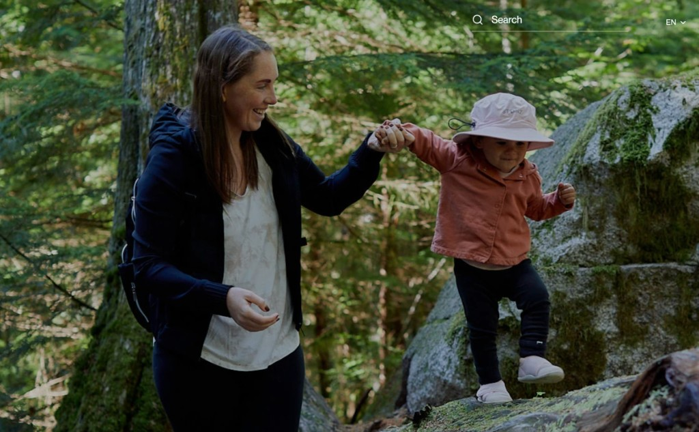
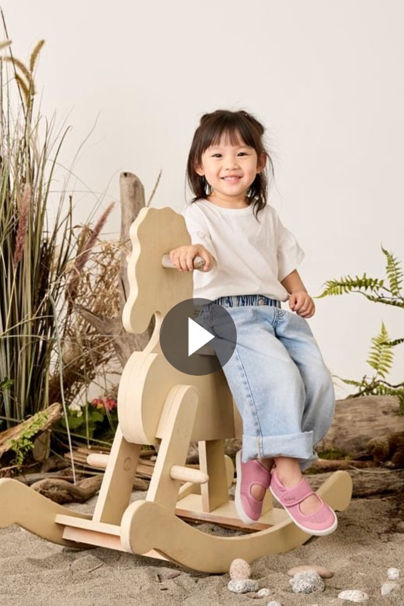
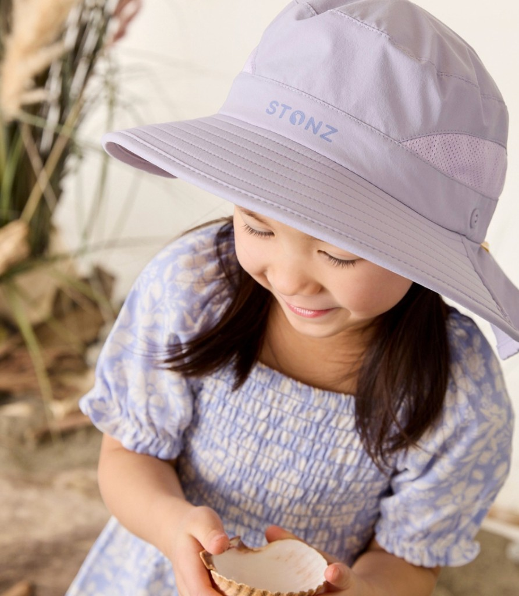

We’re thrilled to share that the Stonz Cruiser™ Original has won the 2025 Baby Innovation Award for Shoe Product of the Year!

Stonz
Since 2004
About us
Stonz is a mom-founded brand, proudly based in Vancouver, Canada. Since 2004, our vision has been to connect kids to the outdoors daily, no matter the weather. We make it easy to get outside with kid-centric products designed around kids movement. We create high-quality footwear and apparel, made to last through multiple seasons, so children (and parents) can enjoy the open air with comfort, security, and the freedom to move. We live our values each day by developing thoughtful products specifically designed for children. It's important to us that we make it easier for families to spend time together more easily, turning every moment into a memorable and fun experience.
At the heart of it all we are guided by our brand promise to make getting outside easy for both parents and children. Stonz promises that our footwear will support developing feet and our apparel is made to last through multiple stages of growth.


Our story
Our story began in 2004 when founder Lisa Will, an outdoor enthusiast and new mom, realized how challenging it was to get outside with a baby.
Determined to make life easier for parents, she designed a bootie that slipped on in seconds, and actually stayed on, so she could spend less time fussing with gear and more time enjoying the outdoors with her son. That sparked a mission to create problem-solving gear that makes getting outside eortless, starting with winter mitts that wouldn’t fall, and growing into a full collection of footwear, accessories, and apparel built for kids’ movement, comfort, and independence.
That same philosophy—helping families spend less time on the struggle and more quality time together—still drives everything we do today.
Milestones
We’re thrilled to share that the Stonz Cruiser™ Original has won the 2025 Baby Innovation Award for Shoe Product of the Year!

Celebrating 20 years of inspiration, Lisa and her son Lachlan recreate their cherished photo from two decades ago. Thank you for supporting Stonz for 20 years.

Stonz launches the comfortable, easy-on stay-on, breathable Cruiser™ Original shoes with a flexible sole for babies and toddlers

Stonz moves its production overseas in order to continue providing great quality products while keeping up with demand

Stonz receives Seals of Approval from Parent Tested Parent Approved (PTPA), Mom's Best, CPMA, National Parenting Center, wins multiple awards: Creative Child's Top Choice, Red Tricycle Totally Awesome, Creative Child's Preferred Choice, Creative Child's Kids Product of the Year.

Stonz Booties wins both the iParenting Media award as a top baby product and Creative Child's Product of the Year Award.
Stonz is born with the vision of making outside easier for parents and children
Values
Guided by a brand promise to make getting outside easy for both parents and children.
Designed for ages 0–6, with every detail supporting movement, independence, and outdoor fun.
Stonz products are crafted with thoughtfully chosen materials that prioritize safety and durability.
Every fabric and component is carefully selected to ensure it’s safe for kids and built to withstand the demands of active play, providing peace of mind for parents and lasting value.
We stand behind our vegan-friendly products that are free from harmful chemicals like flame retardants, formaldehyde, lead and phthalates
Trust
Every Stonz shoe is designed with healthy foot development at its core and certified by both the APMA and CPMA, two of the most respected podiatric organizations in North America. Because the foundation built in childhood shapes how a body moves for life.
Sustainability
We’re committed to designing long-lasting products that are better for kids—and better for the planet. Learn more about how we’re making a difference.
Read more